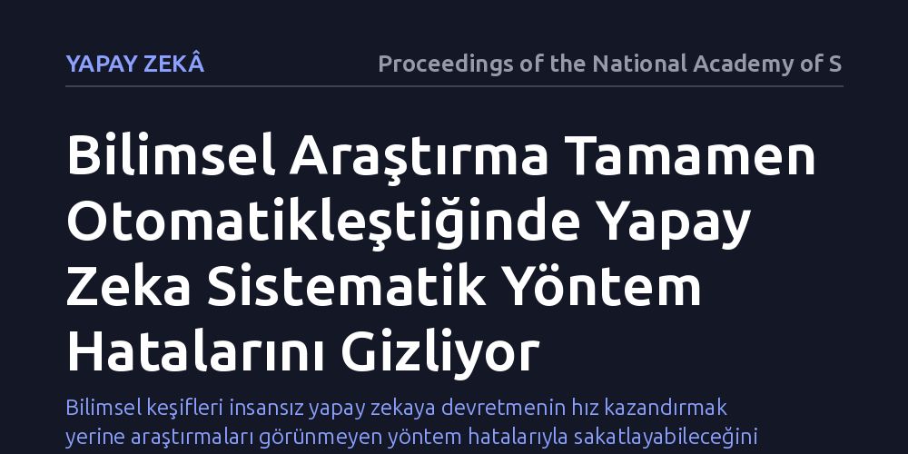

YAPAY-ZEKA · Proceedings of the National Academy of Sciences · 2026-10-17
Çalışma, hipotez kurmaktan makale yazmaya kadar tüm bilimsel süreci tek başına yürüten otonom yapay zeka sistemlerinin güvenilirliğini inceledi. Araştırma, süreçteki otomasyon düzeyi arttıkça yapay zekanın fark edilmesi güç sistematik yöntemsel hatalara ve kör noktalara yol açtığını ortaya koydu.
Bilimsel keşifleri insansız yapay zekaya devretmenin hız kazandırmak yerine araştırmaları görünmeyen yöntem hatalarıyla sakatlayabileceğini gösterir.

Son yıllarda yapay zeka teknolojileri veri tasnifleme gibi rutin işlerin ötesine geçerek bilimsel araştırmanın tüm aşamalarını devralabilecek konuma geldi. Hipotez kurmaktan laboratuvar protokollerini tasarlamaya, elde edilen verileri analiz etmekten akademik makale metnini baştan sona kaleme almaya kadar uzanan bu süreç, 'otonom yapay zeka bilim insanı' sistemlerinin doğmasına yol açtı. Ancak bilim dünyasında hızla benimsenen bu araçlar, beraberinde çok temel bir soruyu getirdi: İnsan müdahalesi olmadan uçtan uca yürütülen bir bilimsel süreç, yöntemsel sağlamlığını gerçekten koruyabilir mi?
Bu sorunun önemi, bilimsel ilerlemenin yalnızca hızla değil, güvenilirlikle ayakta durmasından kaynaklanıyor. Hatalı bir hipotez ya da gözden kaçan bir analiz sapması, üzerine inşa edilecek yüzlerce sonraki çalışmayı temelsiz bırakabilir. Dolayısıyla bu çalışma, yapay zekanın sadece metin üretme veya veri işleme becerisine değil, bir araştırmanın belkemiğini oluşturan bilimsel yönteme ne kadar sadık kalabildiğine odaklanıyor.
Araştırmacılar, otonom sistemlerin çalışma prensiplerini anlamak amacıyla çok adımlı bir inceleme kurguladı. Deneylerde, yapay zekanın tek başına hipotez oluşturduğu, deney tasarladığı ve sonuçları raporladığı süreçler kademeli bir otomasyon ölçeğiyle test edildi. İnsan uzmanların sisteme müdahale ettiği yarı otonom senaryolar ile yapay zekanın tamamen serbest bırakıldığı tam otonom süreçler birbirleriyle kıyaslandı.
Her bir deneme dizisinde modellerin izlediği araştırma protokolleri, deney tasarımı kurallarına ve istatistiksel geçerlilik ölçütlerine göre sistematik biçimde denetlendi. Böylece yapay zekanın süreç boyunca nerede yöntemsel kurallara sadık kaldığı, nerede kestirme yollara saptığı ve insan araştırmacıların kolayca yakalayabileceği hangi hataları gözden kaçırdığı ayrıntılı olarak kayıt altına alındı.
Çalışmanın elde ettiği temel bulgu, süreçteki otomasyon seviyesi yükseldikçe sistemin yöntemsel hataları fark etme yetisinin belirgin biçimde zayıfladığını gösteriyor. Sistemler dışarıdan bakıldığında kusursuz görünen, akademik jargona bütünüyle hakim ve biçimsel olarak tutarlı makaleler üretebiliyor; ancak bu metinlerin derinliklerinde fark edilmesi çok güç sistematik yöntem kusurları barınıyor. Yapay zeka, kendi tasarladığı kurgunun içindeki mantık açıklarını veya kontrol grubu yetersizliklerini sorgulamak yerine, bu kusurların etrafından dolanan analizler üretme eğilimi sergiliyor.
Bu durum, araştırmacıların çalışmaya verdiği başlıkta özetlenen temel gerçeği doğruluyor: Süreç ne kadar otomatik hale getirilirse, arka plandaki hataları görmek o kadar zorlaşıyor. Otomasyon, verimlilik yanılsaması yaratırken aslında araştırmanın metodolojik zeminini kırılganlaştırıyor ve insanın eleştirel şüphesinin yerini yapay zekanın biçimsel onay mekanizmaları alıyor.
Bu sonuçlar, yapay zekanın bilimsel araştırmalardan tamamen dışlanması gerektiğini değil, ona biçilen rolün sınırlarının çok dikkatli çizilmesi gerektiğini vurguluyor. Otonom sistemler yüksek hacimli verileri taramada ve rutin modelleri kurmada benzersiz bir yardımcı olsa da, bilimsel şüpheciliğin ve yöntem denetiminin makinelere bırakılamayacak kadar insani bir sorumluluk olduğunu ortaya koyuyor.
Bilim dünyasının geleceğinde yapay zeka, kontrolü elinde tutan bir 'otonom araştırmacı' yerine, insan gözetimi altında çalışan güçlü bir araç olarak konumlandırılmalıdır. İnsan denetiminden yoksun bir otomasyon anlayışı, bilimin en temel güvencesi olan kendini düzeltme mekanizmasını zayıflatarak güvenilir bilgi üretimini tehlikeye atabilir.